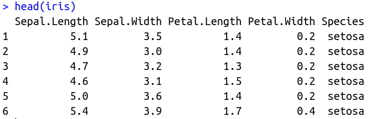

Programación en R.
Módulo 02 - Manejo de datos estructurados.
Agenda del Curso
Módulo 1: Introducción a la programación en R.
- Ambiente de programación.
- Tipos de datos y estructuras de datos básicos.
- Control de flujo y funciones.
Módulo 2: Manejo de datos estructurados.
- Operaciones sobre dataframes.
- Joins y funciones estadísticas.
Módulo 3: Importar y exportar archivos de datos.
- Importar y exportar archivos de datos.
- Conexión a bases de datos SQL.
Módulo 4: Visualización de datos.
- Librería ggplot2 y elementos estéticos de gráficos.
Módulo 2: Manejo de datos estructurados.
Dataframes
Los
dataframesson estructuras de datos de dos dimensiones (rectangulares) que pueden contener datos de diferentes tipos, por lo tanto, son heterogéneos.Podemos entender a los data frames como una versión más flexible de una matriz.
Las filas en un
dataframerepresentan casos, individuos u observaciones, mientras que las columnas representan atributos, rasgos o variables.
data(iris)
head(iris)

dataframesse conforman mediante vectores.
mi_df <- data.frame(
"entero" = 1:3,
"factor" = as.factor(c("a", "b", "c")),
"numero" = c(1.2, 3.4, 4.5),
"cadena" = c("a", "b", "c")
)
dplyr
- El paquete
dplyrfue desarrollado por Hadley Wickham (RStudio) como una optimización del paqueteplyr.
El paquete está escrito en
C++. Las funciones que provee permiten hacer operaciones más rápido que su equivalente del paquete base.
La instalación es sencilla.
install.packages("dplyr", dep=TRUE)Para cargar la librería, usar:
library("dplyr")
funciones
select(): selecccionarfilter(): filtrararrange(): ordenarrename(): renombrarmutate(): mutarsummarise(): resumir
dplyr::select()
dplyr::filter()
dplyr::arrange()
dplyr::rename()
dplyr::mutate()
dplyr::summarise()
select()
La función
select()es usada para seleccionar columnas de undataframeque queremos extraer.Estas son dos formas de utilizar esta función:
# Opcion 1 mtcars %>% select(1,2) # Opcion 2 select(mtcars,1,2)Operador
%>%(pipe)Los ejemplos descritos, se encuentran en:
Código: M2_C1_script01.R
Ejemplo 1
# Opcion 1
mtcars %>% select(1,2) %>% head(3)
## mpg cyl
## Mazda RX4 21.0 6
## Mazda RX4 Wag 21.0 6
## Datsun 710 22.8 4
# Opcion 2
select(mtcars,1,2) %>% head(3)
## mpg cyl
## Mazda RX4 21.0 6
## Mazda RX4 Wag 21.0 6
## Datsun 710 22.8 4
select()
Otras funcionalidades:
-:starts_withends_withcontainsmatcheseverythingone_of
Los ejemplos descritos, se encuentran en:
Código: M2_C1_script01.R
Ejemplo 2
mtcars %>% select(-c("drat","wt","qsec",
"vs","am","gear","carb")) %>% head(3)
## mpg cyl disp hp
## Mazda RX4 21.0 6 160 110
## Mazda RX4 Wag 21.0 6 160 110
## Datsun 710 22.8 4 108 93
mtcars %>% select(1:4) %>% head(3)
## mpg cyl disp hp
## Mazda RX4 21.0 6 160 110
## Mazda RX4 Wag 21.0 6 160 110
## Datsun 710 22.8 4 108 93
filter()
La función
filter()filtra las filas y deja solo las que cumplen una condición dada.Algunas funcionalidades.
near,between,%in%str_detectfilter_all()filter_if()filter_at()
Los ejemplos descritos, se encuentran en:
Código: M2_C1_script02.R
Ejemplo 3
msleep %>%
select(name, sleep_total) %>%
filter(sleep_total > 18)
## # A tibble: 4 × 2
## name sleep_total
## <chr> <dbl>
## 1 Big brown bat 19.7
## 2 Thick-tailed opposum 19.4
## 3 Little brown bat 19.9
## 4 Giant armadillo 18.1
Operadores:
>,>=,<,<=,==,!=
arrange()
La función
arrange()es usada para reordenar las filas de un data frame según una o más columnas.Por defecto
arrange()ordena las filas en orden ascendente.# Opcion ascendente arrange(iris, Species) # Opcion descendente arrange(iris, desc(Species))Los ejemplos descritos, se encuentran en:
Código: M2_C1_script03.R
Ejemplo 4
iris %>% select(Species, Sepal.Length) %>%
filter(Species == "setosa") %>%
arrange(Sepal.Length) %>% head(5)
## Species Sepal.Length
## 1 setosa 4.3
## 2 setosa 4.4
## 3 setosa 4.4
## 4 setosa 4.4
## 5 setosa 4.5
rename()
La función
rename()permite modificar el nombre de una o más columnas, conservando el resto.La función
select()permite realizar también una modificación en los nombre de las columnas, pero en ese caso solo se conservan las columnas seleccionadas.Los ejemplos descritos, se encuentran en:
Código: M2_C1_script04.R
Ejemplo 5
iris %>% select(Species, Sepal.Length,
Sepal.Width) %>%
filter(Species == "setosa") %>%
rename(Tipo=Species, Largo=Sepal.Length,
Ancho=Sepal.Width) %>%
arrange(desc(Largo)) %>% head(5)
## Tipo Largo Ancho
## 1 setosa 5.8 4.0
## 2 setosa 5.7 4.4
## 3 setosa 5.7 3.8
## 4 setosa 5.5 4.2
## 5 setosa 5.5 3.5
mutate()
Para crear una nueva variable a partir del dataframe original podemos utilizar las funciones
mutate()ytransmute().mutate()creará una nueva columna con el resultado deseado que se añadirá al dataframe.transmute()devuelve únicamente las columnas mencionadas en transmute. Además, se puede seleccionar columnas y modificar el nombre de las columnas, todo en una sola función.Código: M2_C1_script05.R
Ejemplo 6
iris %>%
select(Species, Sepal.Length)%>%
mutate(Sepal2 = Sepal.Length^2)%>%
head(1)
## Species Sepal.Length Sepal2
## 1 setosa 5.1 26.01
iris %>%
transmute(Species, Sepal2 = Sepal.Length^2) %>%
head(1)
## Species Sepal2
## 1 setosa 26.01
summarise()
La función
group_byes usada para agrupar datos según una variable.Una vez con los datos agrupados podemos usar
summarizepara resumir estos utilizando función de agrupacióngroup_by.mtcars %>% select(mpg, hp, cyl, wt) %>% filter(cyl != 4 & wt > 3.000) %>% group_by(cyl) %>% summarize(mean(hp), mean(mpg))Los ejemplos descritos, se encuentran en:
Código: M2_C1_script06.R
Ejemplo 7
mtcars %>%
select(mpg, hp, cyl, wt) %>%
filter(cyl != 4 & wt > 3.000) %>%
group_by(cyl) %>%
summarize(mean(hp), mean(mpg)) %>% #Dentro del summarise se puede crear la variable Prom_hp=mean(hp), Prom_mpg=mean(mpg)
rename(Prom_hp =`mean(hp)`,
Prom_mpg = `mean(mpg)`)
## # A tibble: 2 × 3
## cyl Prom_hp Prom_mpg
## <dbl> <dbl> <dbl>
## 1 6 115. 19.1
## 2 8 209. 15.1